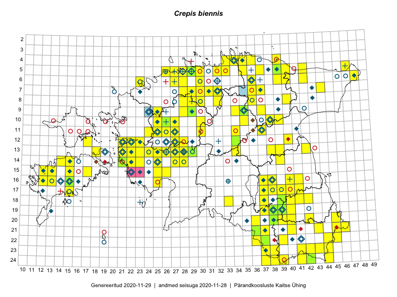

Crepis biennis — kaheaastane koeratubakas
Kaardile koondatud taksonid: Crepis biennis L. (242)

Kaart põhineb 242 kirjel, neist:
vaatlusi 220
eksemplare 22
Kaasaegsed1 leiukohad asuvad 147 ruudus.
Andmed “Eesti taimede levikuatlasest”,2 sulgudes ruutude arv:3
● 1971–2005 (75)
○ 1921–1970 (67)
△ kuni 1920 (5)
+ hävinud (0)
? kaheldav (0)
Lisaruudud teistest andmebaasidest:4
ELF: 2006– . . . (2)
PKÜ: 2006– . . . (2)
ELF: 1971–2005 (0)
PKÜ: 1997–2005 (7)
| Ruut | Vaatleja(d) | Vaatlusaeg | Kirje PlutoFis |
|---|---|---|---|
| 19-40 | Malle Leht | 2015-05-16 | ruut/ala: Crepis biennis L. |
| 16-40 | Thea Kull | 2015-07-07 | ruut/ala: Crepis biennis L. |
| 14-15 | Toomas Kukk, Eerik Leibak | 2015-08-09 | ruut/ala: Crepis biennis L. |
| 13-26 | Toomas Kukk, Thea Kull, Timo Luhamäe, Ott Luuk, Peedu Saar | 2015-06-28 | ruut/ala: Crepis biennis L. |
| 23-43 | Ott Luuk, Peedu Saar | 2015-08-12 | ruut/ala: Crepis biennis L. |
| 06-42 | Peedu Saar, Sander Laherand | 2015-05-30 | ruut/ala: Crepis biennis L. |
| 18-40 | Malle Leht | 2015-07-25 | ruut/ala: Crepis biennis L. |
| 20-39 | Malle Leht, Raivo Leht | 2015-07-28 | ruut/ala: Crepis biennis L. |
| 20-40 | Malle Leht, Raivo Leht | 2015-07-27 | ruut/ala: Crepis biennis L. |
| 12-34 | Toomas Kukk, Tiit Hallikma | 2015-06-12 | ruut/ala: Crepis biennis L. |
| 19-39 | Malle Leht | 2015-07-08 | ruut/ala: Crepis biennis L. |
| 18-39 | Malle Leht | 2015-07-08 | ruut/ala: Crepis biennis L. |
| 12-40 | Peedu Saar, Eerik Leibak | 2015-08-16 | ruut/ala: Crepis biennis L. |
| 06-27 | Toomas Kukk | 2015-06-19 | ruut/ala: Crepis biennis L. |
| 05-47 | Tiit Hallikma, Toomas Kukk | 2015-07-22 | ruut/ala: Crepis biennis L. |
| 05-32 | Rein Kalamees, Kersti Püssa | 2015-08-10 | ruut/ala: Crepis biennis L. |
| 04-35 | Rein Kalamees, Kersti Püssa | 2015-08-25 | ruut/ala: Crepis biennis L. |
| 04-33 | Rein Kalamees, Kersti Püssa | 2015-09-12 | ruut/ala: Crepis biennis L. |
| 07-44 | Tiit Hallikma, Toomas Kukk | 2015-07-20 | ruut/ala: Crepis biennis L. |
| 05-35 | Rein Kalamees, Kersti Püssa | 2015-08-16 | ruut/ala: Crepis biennis L. |
| 05-33 | Rein Kalamees, Kersti Püssa | 2015-09-12 | ruut/ala: Crepis biennis L. |
| 06-48 | Ott Luuk, Hannes Pehlak | 2015-07-21 | ruut/ala: Crepis biennis L. |
| 17-39 | Thea Kull, Peedu Saar | 2015-06-17 | ruut/ala: Crepis biennis L. |
| 17-38 | Thea Kull, Peedu Saar | 2015-06-17 | ruut/ala: Crepis biennis L. |
| 16-38 | Thea Kull, Eerik Leibak | 2015-07-03 | ruut/ala: Crepis biennis L. |
| 21-45 | Toomas Kukk, Timo Luhamäe, Kersti Tambets, Sten Mander, Janika Sammasto | 2014-07-30 | ruut/ala: Crepis biennis L. |
| 12-17 | Eeva-Maria Jeletsky, Tarmo Niitla | 2015-06-21 | ruut/ala: Crepis biennis L. |
| 11-37 | Ülle Jõgar, Illi Tarmu, K. Rünk | 2015-07-24 | ruut/ala: Crepis biennis L. |
| 18-33 | Maria Abakumova, Tiit Hallikma | 2015-07-11 | ruut/ala: Crepis biennis L. |
| 13-38 | Ülle Jõgar, Illi Tarmu, Kai Rünk | 2015-07-03 | ruut/ala: Crepis biennis L. |
| 05-29 | Erkki Otsman, Sergei Smirnov | 2015-07-12 | ruut/ala: Crepis biennis L. |
| 10-39 | Kai Rünk, Ülle Jõgar, Illi Tarmu | 2015-07-27 | ruut/ala: Crepis biennis L. |
| 16-12 | Mari Reitalu, Triin Reitalu | 2015-07-20 | ruut/ala: Crepis biennis L. |
| 15-12 | Mari Reitalu, Oliver Parrest | 2015-07-21 | ruut/ala: Crepis biennis L. |
| 05-29 | Thea Kull | 2014-07-14 | ruut/ala: Crepis biennis L. |
| 11-37 | Ulvi Selgis | 2015-08-18 | ruut/ala: Crepis biennis L. |
| 12-27 | Aat Sarv | 2015-07-30 | ruut/ala: Crepis biennis L. |
| 11-27 | Aat Sarv | 2015-07-25 | ruut/ala: Crepis biennis L. |
| 18-37 | Helle Mäemets, Mare Leis | 2015-06-22 | ruut/ala: Crepis biennis L. |
| 09-37 | Karin Kikas, Elle Rajandu | 2015-06-01 | ruut/ala: Crepis biennis L. |
| 10-30 | Toivo Sepp, Ott Luuk | 2015-08-21 | ruut/ala: Crepis biennis L. |
| 11-25 | Aat Sarv | 2015-07-30 | ruut/ala: Crepis biennis L. |
| 10-26 | Aat Sarv | 2015-08-12 | ruut/ala: Crepis biennis L. |
| 11-30 | Toivo Sepp, Elle Roosaluste | 2015-07-04 | ruut/ala: Crepis biennis L. |
| 11-30 | Toivo Sepp, Ott Luuk | 2015-08-20 | ruut/ala: Crepis biennis L. |
| 05-42 | Kaili Orav, Silvia Pihu | 2015-06-18 | ruut/ala: Crepis biennis L. |
| 06-39 | Kaili Orav, Silvia Pihu | 2015-07-20 | ruut/ala: Crepis biennis L. |
| 05-40 | Kaili Orav, Silvia Pihu | 2015-07-21 | ruut/ala: Crepis biennis L. |
| 07-37 | Peedu Saar, Ott Luuk | 2014-10-08 | ruut/ala: Crepis biennis L. |
| 13-24 | Marek Sammul, Ott Luuk | 2014-06-21 | ruut/ala: Crepis biennis L. |
| 09-25 | Thea Kull, Meeli Mesipuu, Eerik Leibak | 2014-06-11 | ruut/ala: Crepis biennis L. |
| 10-30 | Ott Luuk, Jaak-Albert Metsoja, Maret Gerz | 2014-06-10 | ruut/ala: Crepis biennis L. |
| 10-25 | Ott Luuk, Jaak-Albert Metsoja, Maret Gerz | 2014-06-11 | ruut/ala: Crepis biennis L. |
| 05-29 | Peedu Saar, Sander Laherand | 2013-07-07 | ruut/ala: Crepis biennis L. |
| 11-25 | Hanna-Eliisa Luts, Tõnu Ploompuu | 2015-07-28 | ruut/ala: Crepis biennis L. |
| 08-28 | Aat Sarv | 2015-08-03 | ruut/ala: Crepis biennis L. |
| 10-27 | Aat Sarv | 2015-07-02 | ruut/ala: Crepis biennis L. |
| 11-26 | Hanna-Eliisa Luts, Tõnu Ploompuu | 2015-07-28 | ruut/ala: Crepis biennis L. |
| 05-28 | Peedu Saar | 2016-06-01 | ruut/ala: Crepis biennis L. |
| 13-39 | Kai Rünk, Ülle Jõgar, Illi Tarmu | 2016-06-08 | ruut/ala: Crepis biennis L. |
| 09-35 | Jana-Maria Habicht, Ester Valdvee, Kirke Pilvik, Anu Nurk | 2015-07-30 | ruut/ala: Crepis biennis L. |
| 13-42 | Kai Rünk, Ülle Jõgar, Illi Tarmu | 2016-06-10 | ruut/ala: Crepis biennis L. |
| 19-38 | Meeli Mesipuu, Timo Luhamäe | 2016-06-13 | ruut/ala: Crepis biennis L. |
| 21-45 | Toomas Kukk, Tiit Hallikma, Johannes Kõdar | 2016-06-14 | ruut/ala: Crepis biennis L. |
| 23-42 | Rein Kalamees, Eerik Leibak | 2016-06-14 | ruut/ala: Crepis biennis L. |
| 23-44 | Rein Kalamees, Eerik Leibak | 2016-06-15 | ruut/ala: Crepis biennis L. |
| 24-44 | Rein Kalamees, Eerik Leibak | 2016-06-15 | ruut/ala: Crepis biennis L. |
| 23-38 | Rein Kalamees, Eerik Leibak | 2016-06-16 | ruut/ala: Crepis biennis L. |
| 23-41 | Sander Laherand, Ott Luuk, Susanna Vain | 2016-06-15 | ruut/ala: Crepis biennis L. |
| 21-36 | Silvia Pihu | 2015-06-28 | ruut/ala: Crepis biennis L. |
| 21-37 | Silvia Pihu | 2015-06-28 | ruut/ala: Crepis biennis L. |
| 22-36 | Silvia Pihu | 2015-06-27 | ruut/ala: Crepis biennis L. |
| 22-37 | Silvia Pihu | 2015-06-27 | ruut/ala: Crepis biennis L. |
| 19-39 | Peedu Saar, Tarmo Niitla | 2016-06-13 | ruut/ala: Crepis biennis L. |
| 24-41 | Ott Luuk, Sander Laherand, Susanna Vain | 2016-06-15 | ruut/ala: Crepis biennis L. |
| 20-42 | Vivika Väli, Ülo Väli | 2015-07-27 | ruut/ala: Crepis biennis L. |
| 24-38 | Maret Gerz, Liina Oja | 2016-06-14 | ruut/ala: Crepis biennis L. |
| 24-39 | Maret Gerz, Liina Oja | 2016-06-14 | ruut/ala: Crepis biennis L. |
| 23-37 | Maret Gerz, Liina Oja | 2016-06-15 | ruut/ala: Crepis biennis L. |
| 24-37 | Maret Gerz, Liina Oja | 2016-06-15 | ruut/ala: Crepis biennis L. |
| 19-37 | Maret Gerz, Liina Oja | 2016-06-16 | ruut/ala: Crepis biennis L. |
| 14-28 | Thea Kull, Tiit Hallikma | 2016-07-08 | ruut/ala: Crepis biennis L. |
| 14-25 | Toomas Kukk, Oliver Parrest | 2016-07-08 | ruut/ala: Crepis biennis L. |
| 15-25 | Toomas Kukk, Oliver Parrest | 2016-07-08 | ruut/ala: Crepis biennis L. |
| 05-26 | Tiina Elvisto, Eerik Leibak | 2016-07-04 | ruut/ala: Crepis biennis L. |
| 14-23 | Thea Kull, Eerik Leibak | 2016-07-05 | ruut/ala: Crepis biennis L. |
| 13-23 | Thea Kull, Eerik Leibak | 2016-07-05 | ruut/ala: Crepis biennis L. |
| 13-28 | Thea Kull, Tiit Hallikma | 2016-07-08 | ruut/ala: Crepis biennis L. |
| 16-25 | Thea Kull, Helle Mäemets | 2016-07-04 | ruut/ala: Crepis biennis L. |
| 12-28 | Mari Reitalu, Eerik Leibak | 2016-07-06 | ruut/ala: Crepis biennis L. |
| 18-39 | Tarmo Niitla, Peedu Saar | 2016-06-13 | ruut/ala: Crepis biennis L. |
| 21-40 | Tarmo Niitla, Peedu Saar | 2016-06-17 | ruut/ala: Crepis biennis L. |
| 14-21 | Mari Reitalu, Oliver Parrest | 2016-07-04 | ruut/ala: Crepis biennis L. |
| 14-22 | Mari Reitalu, Oliver Parrest | 2016-07-04 | ruut/ala: Crepis biennis L. |
| 11-24 | Ulvi Selgis | 2016-07-23 | ruut/ala: Crepis biennis L. |
| 10-27 | Ulvi Selgis | 2016-07-23 | ruut/ala: Crepis biennis L. |
| 08-40 | Toomas Kukk, Tiit Hallikma | 2016-07-29 | ruut/ala: Crepis biennis L. |
| 09-34 | Ott Luuk, Eerik Leibak | 2016-07-25 | ruut/ala: Crepis biennis L. |
| 05-37 | Tõnu Ploompuu, Eerik Leibak | 2016-07-27 | ruut/ala: Crepis biennis L. |
| 05-30 | Sander Laherand, Eerik Leibak | 2016-07-29 | ruut/ala: Crepis biennis L. |
| 10-35 | Toomas Kukk, Tiit Hallikma | 2016-07-25 | ruut/ala: Crepis biennis L. |
| 10-38 | Ott Luuk, Eerik Leibak | 2016-08-08 | ruut/ala: Crepis biennis L. |
| 14-14 | Peedu Saar, Maret Gerz | 2016-08-12 | ruut/ala: Crepis biennis L. |
| 13-26 | Maret Gerz, Liina Oja | 2016-07-08 | ruut/ala: Crepis biennis L. |
| 14-15 | Peedu Saar, Maret Gerz | 2016-08-11 | ruut/ala: Crepis biennis L. |
| 13-22 | Aat Sarv, Maret Gerz | 2016-07-05 | ruut/ala: Crepis biennis L. |
| 15-26 | Aat Sarv, Maret Gerz | 2016-07-04 | ruut/ala: Crepis biennis L. |
| 08-29 | Sander Laherand, Rein Kalamees | 2016-07-08 | ruut/ala: Crepis biennis L. |
| 13-21 | Aat Sarv, Maret Gerz | 2016-07-05 | ruut/ala: Crepis biennis L. |
| 16-38 | Rein Kalamees, Kersti Püssa | 2016-07-19 | ruut/ala: Crepis biennis L. |
| 06-40 | Sander Laherand, Peedu Saar | 2016-07-28 | ruut/ala: Crepis biennis L. |
| 23-44 | Peedu Saar, Karin Kikas | 2016-08-19 | ruut/ala: Crepis biennis L. |
| 06-30 | Toomas Kukk, Sander Laherand | 2016-08-30 | ruut/ala: Crepis biennis L. |
| 17-39 | Rein Kalamees, Kersti Püssa | 2016-07-21 | ruut/ala: Crepis biennis L. |
| 18-37 | Rein Kalamees, Kersti Püssa | 2016-07-21 | ruut/ala: Crepis biennis L. |
| 07-29 | Rein Kalamees, Sander Laherand | 2016-07-08 | ruut/ala: Crepis biennis L. |
| 07-30 | Rein Kalamees, Liina Oja | 2016-07-04 | ruut/ala: Crepis biennis L. |
| 12-21 | Rein Kalamees, Liina Oja | 2016-07-08 | ruut/ala: Crepis biennis L. |
| 12-22 | Mari Reitalu, Oliver Parrest | 2016-07-05 | ruut/ala: Crepis biennis L. |
| 12-23 | Mari Reitalu, Oliver Parrest | 2016-07-05 | ruut/ala: Crepis biennis L. |
| 09-28 | Rein Kalamees, Liina Oja | 2016-07-06 | ruut/ala: Crepis biennis L. |
| 08-32 | Rein Kalamees, Kersti Püssa | 2016-07-01 | ruut/ala: Crepis biennis L. |
| 07-32 | Rein Kalamees, Kersti Püssa | 2016-06-23 | ruut/ala: Crepis biennis L. |
| 17-38 | Kersti Püssa, Rein Kalamees | 2016-07-25 | ruut/ala: Crepis biennis L. |
| 17-41 | Kersti Püssa, Rein Kalamees | 2016-07-29 | ruut/ala: Crepis biennis L. |
| 17-40 | Kersti Püssa, Rein Kalamees | 2016-07-28 | ruut/ala: Crepis biennis L. |
| 16-41 | Kersti Püssa, Rein Kalamees | 2016-07-27 | ruut/ala: Crepis biennis L. |
| 16-40 | Kersti Püssa, Rein Kalamees | 2016-06-25 | ruut/ala: Crepis biennis L. |
| 06-36 | Peedu Saar, Liina Oja, Susanna Vain | 2016-07-27 | ruut/ala: Crepis biennis L. |
| 11-34 | Peedu Saar, Timo Luhamäe | 2016-07-21 | ruut/ala: Crepis biennis L. |
| 07-31 | Peedu Saar, Toivo Sepp | 2016-07-18 | ruut/ala: Crepis biennis L. |
| 13-24 | Peedu Saar, Timo Luhamäe, Johannes Kõdar | 2016-07-05 | ruut/ala: Crepis biennis L. |
| 13-25 | Peedu Saar, Timo Luhamäe, Johannes Kõdar | 2016-07-05 | ruut/ala: Crepis biennis L. |
| 10-27 | Peedu Saar, Timo Luhamäe, Johannes Kõdar | 2016-07-06 | ruut/ala: Crepis biennis L. |
| 13-27 | Peedu Saar, Timo Luhamäe | 2016-07-08 | ruut/ala: Crepis biennis L. |
| 05-39 | Ott Luuk, Tiit Hallikma | 2016-07-28 | ruut/ala: Crepis biennis L. |
| 14-27 | Peedu Saar, Timo Luhamäe | 2016-07-08 | ruut/ala: Crepis biennis L. |
| 11-27 | Meeli Mesipuu | 2016-07-08 | ruut/ala: Crepis biennis L. |
| 13-34 | Meeli Mesipuu, Timo Luhamäe | 2016-07-22 | ruut/ala: Crepis biennis L. |
| 17-15 | Meeli Mesipuu, Toomas Kukk, Johannes Kõdar | 2016-08-11 | ruut/ala: Crepis biennis L. |
| 18-41 | Ott Luuk, Sander Laherand, Susanna Vain | 2016-06-13 | ruut/ala: Crepis biennis L. |
| 24-37 | Meeli Mesipuu, Thea Kull | 2013-07-19 | punkt: Crepis biennis L. |
| 22-45 | Jaak-Albert Metsoja, Mari Metsoja | 2016-06-15 | ruut/ala: Crepis biennis L. |
| 22-37 | Jaak-Albert Metsoja, Mari Metsoja | 2016-06-16 | ruut/ala: Crepis biennis L. |
| 12-27 | Jaak-Albert Metsoja, Mari Metsoja | 2016-07-05 | ruut/ala: Crepis biennis L. |
| 04-34 | Hannes Pehlak, Toomas Kukk | 2016-07-26 | ruut/ala: Crepis biennis L. |
| 16-13 | Mari Reitalu | 2007-04-26 | ruut/ala: Crepis biennis L. |
| 15-12 | Mari Reitalu | 2007-04-26 | ruut/ala: Crepis biennis L. |
| 17-37 | Thea Kull, Ott Luuk | 2017-06-21 | ruut/ala: Crepis biennis L. |
| 22-36 | Ott Luuk, Peedu Saar | 2017-07-28 | ruut/ala: Crepis biennis L. |
| 22-39 | Ott Luuk, Peedu Saar | 2017-07-27 | ruut/ala: Crepis biennis L. |
| 16-37 | Ott Luuk, Thea Kull | 2017-08-01 | ruut/ala: Crepis biennis L. |
| 08-30 | Thea Kull, Ott Luuk | 2017-08-09 | ruut/ala: Crepis biennis L. |
| 08-29 | Peedu Saar, Toomas Kukk | 2017-09-08 | ruut/ala: Crepis biennis L. |
| 14-25 | Peedu Saar, Toomas Kukk | 2017-09-06 | ruut/ala: Crepis biennis L. |
| 08-29 | Ott Luuk, Thea Kull | 2017-08-09 | ruut/ala: Crepis biennis L. |
| 21-36 | Peedu Saar, Ott Luuk | 2017-07-28 | ruut/ala: Crepis biennis L. |
| 14-39 | Peedu Saar | 2017-07-26 | ruut/ala: Crepis biennis L. |
| 19-38 | Peedu Saar, Ott Luuk | 2017-07-25 | ruut/ala: Crepis biennis L. |
| 08-40 | Peedu Saar, Ott Luuk | 2017-07-18 | ruut/ala: Crepis biennis L. |
| 05-27 | Ranno Puumets | 2017-07-31 | ruut/ala: Crepis biennis L. |
| 20-38 | Ott Luuk, Peedu Saar | 2017-07-25 | ruut/ala: Crepis biennis L. |
| 18-39 | Malle Leht | 2015-07-09 | ruut/ala: Crepis biennis L. |
| 22-37 | Silvia Pihu | 2015-06-27 | punkt: Crepis biennis L. |
| 24-37 | Meeli Mesipuu, Thea Kull | 2013-06-27 | punkt: Crepis biennis L. |
| 24-37 | Meeli Mesipuu | 2013-07-04 | punkt: Crepis biennis L. |
| 24-38 | Meeli Mesipuu | 2013-07-04 | punkt: Crepis biennis L. |
| 16-15 | Elle Rajandu, Karin Kikas | 2015-07-20 | punkt: Crepis biennis L. |
| 21-45 | Toomas Kukk | 2017-06-23 | punkt: Crepis biennis L. |
| 20-38 | Peedu Saar, Ott Luuk | 2017-07-25 | punkt: Crepis biennis L. |
| 08-36 | Elle Rajandu, Karin Kikas | 2016-06-27 | punkt: Crepis biennis L. |
| 17-37 | Helle Mäemets | 2015-05-03 | ruut/ala: Crepis biennis L. |
| 16-40 | Meeli Mesipuu | 2017-07-22 | ruut/ala: Crepis biennis L. |
| 16-40 | Meeli Mesipuu | 2017-07-22 | punkt: Crepis biennis L. |
| 16-15 | Toomas Kukk, Ilmar Uibopuu | 2018-05-27 | ruut/ala: Crepis biennis L. |
| 21-46 | Rein Kalamees | 2018-06-19 | ruut/ala: Crepis biennis L. |
| 13-18 | Mari Reitalu, Merit Otsus | 2018-06-16 | punkt: Crepis biennis L. |
| 18-33 | Mari Reitalu, Elle Roosaluste | 2018-06-02 | ruut/ala: Crepis biennis L. |
| 11-37 | Toomas Kukk, Ilmar Uibopuu | 2018-06-30 | punkt: Crepis biennis L. |
| 11-37 | Toomas Kukk, Ilmar Uibopuu | 2018-06-30 | punkt: Crepis biennis L. |
| 12-22 | Peedu Saar, Toomas Kukk, Ott Luuk, Kersti Tambets, Sten Mander | 2018-08-17 | ruut/ala: Crepis biennis L. |
| 05-32 | Rein Kalamees | 2018-06-28 | ruut/ala: Crepis biennis L. |
| 11-37 | Peedu Saar, Toomas Kukk, Ilmar Uibopuu | 2018-06-30 | ruut/ala: Crepis biennis L. |
| 07-37 | Peedu Saar, Toomas Kukk, Ilmar Uibopuu | 2018-06-30 | ruut/ala: Crepis biennis L. |
| 06-23 | Peedu Saar | 2018-07-04 | punkt: Crepis biennis L. |
| 06-27 | Meeli Mesipuu | 2019-06-16 | ruut/ala: Crepis biennis L. |
| 06-27 | Meeli Mesipuu | 2019-06-16 | ruut/ala: Crepis biennis L. |
| 06-27 | Meeli Mesipuu | 2019-06-22 | ruut/ala: Crepis biennis L. |
| 15-15 | Toomas Kukk, Eerik Leibak | 2019-07-05 | ruut/ala: Crepis biennis L. |
| 23-41 | Toomas Kukk, Indrek Tammekänd | 2019-07-12 | ruut/ala: Crepis biennis L. |
| 23-42 | Toomas Kukk, Indrek Tammekänd | 2019-07-12 | ruut/ala: Crepis biennis L. |
| 17-38 | Meeli Mesipuu | 2019-07-23 | punkt: Crepis biennis L. |
| 17-38 | Meeli Mesipuu | 2019-07-23 | ruut/ala: Crepis biennis L. |
| 17-38 | Meeli Mesipuu | 2019-07-23 | punkt: Crepis biennis L. |
| 21-45 | Toomas Kukk | 2019-06-23 | punkt: Crepis biennis L. |
| 17-38 | Meeli Mesipuu | 2019-07-23 | punkt: Crepis biennis L. |
| 17-38 | Thea Kull | 2019-08-06 | punkt: Crepis biennis L. |
| 04-36 | Meeli Mesipuu | 2019-08-06 | punkt: Crepis biennis L. |
| 19-38 | Toomas Kukk, Peedu Saar | 2019-08-01 | ruut/ala: Crepis biennis L. |
| 20-39 | Toomas Kukk, Peedu Saar | 2019-08-01 | punkt: Crepis biennis L. |
| 17-39 | Thea Kull | 2019-07-12 | ruut/ala: Crepis biennis L. |
| 18-42 | Thea Kull, Meeli Mesipuu | 2019-07-09 | ruut/ala: Crepis biennis L. |
| 19-38 | Thea Kull | 2019-07-11 | ruut/ala: Crepis biennis L. |
| 19-39 | Thea Kull | 2019-07-10 | ruut/ala: Crepis biennis L. |
| 05-29 | Thea Kull | 2019-06-12 | ruut/ala: Crepis biennis L. |
| 13-29 | Mari Reitalu, Thea Kull | 2019-08-28 | ruut/ala: Crepis biennis L. |
| 15-13 | Mari Reitalu, Sirje Azarov | 2019-08-31 | ruut/ala: Crepis biennis L. |
| 21-43 | Toomas Kukk, Peedu Saar | 2019-07-31 | ruut/ala: Crepis biennis L. |
| 05-30 | Peedu Saar, Timo Luhamäe | 2019-08-06 | ruut/ala: Crepis biennis L. |
| 07-31 | Peedu Saar, Timo Luhamäe | 2019-08-05 | ruut/ala: Crepis biennis L. |
| 18-37 | Peedu Saar, Ott Luuk | 2019-07-15 | ruut/ala: Crepis biennis L. |
| 24-39 | Peedu Saar, Timo Luhamäe | 2019-07-12 | ruut/ala: Crepis biennis L. |
| 23-37 | Peedu Saar, Timo Luhamäe | 2019-07-11 | ruut/ala: Crepis biennis L. |
| 20-36 | Peedu Saar, Timo Luhamäe | 2019-07-09 | ruut/ala: Crepis biennis L. |
| 20-38 | Peedu Saar, Timo Luhamäe | 2019-07-09 | ruut/ala: Crepis biennis L. |
| 04-39 | Peedu Saar, Ott Luuk | 2019-07-05 | ruut/ala: Crepis biennis L. |
| 08-36 | Ott Luuk, Jaak-Albert Metsoja | 2019-08-05 | ruut/ala: Crepis biennis L. |
| 07-36 | Ott Luuk, Jaak-Albert Metsoja | 2019-08-05 | ruut/ala: Crepis biennis L. |
| 22-44 | Ott Luuk, Tiit Hallikma | 2019-07-12 | ruut/ala: Crepis biennis L. |
| 23-43 | Ott Luuk, Tiit Hallikma | 2019-07-11 | ruut/ala: Crepis biennis L. |
| 05-39 | Toomas Kukk | 2006-07-18 | TAA0009820: Crepis biennis L. |
| 19-39 | Anneli Palo | 2006-07-21 | TAA0009821: Crepis biennis L. |
| 09-29 | Ott Luuk | 2013-06-11 | TAA0116774: Crepis biennis L. |
| 09-29 | Ott Luuk | 2013-06-11 | TAA0116775: Crepis biennis L. |
| 09-29 | Ott Luuk | 2013-06-11 | TAA0116776: Crepis biennis L. |
| 09-35 | Jana-Maria Habicht | 2015-07-30 | TAM0119830: Crepis biennis L. |
| 22-37 | Silvia Pihu | 2015-06-27 | TU309722: Crepis biennis L. |
| 12-34 | Toomas Kukk, Tiit Hallikma | 2015-06-12 | TAA0134429: Crepis biennis L. |
| 10-26 | Thea Kull | 2014-06-11 | TAA0113800: Crepis biennis L. |
| 05-39 | Kaili Orav, Silvia Pihu | 2015-06-19 | TAA0135411: Crepis biennis L. |
| 14-21 | Ott Luuk | 2014-06-30 | TAA0137934: Crepis biennis L. |
| 14-21 | Ott Luuk | 2014-06-30 | TAA0137935: Crepis biennis L. |
| 14-21 | Ott Luuk | 2014-06-30 | TAA0137936: Crepis biennis L. |
| 18-39 | Malle Leht | 2015-07-09 | TAA0119699: Crepis biennis L. |
| 19-39 | Malle Leht | 2015-07-08 | TAA0119700: Crepis biennis L. |
| 19-39 | Malle Leht | 2015-07-08 | TAA0119701: Crepis biennis L. |
| 16-15 | Elle Rajandu, Karin Kikas | 2015-07-20 | TAA0143097: Crepis biennis L. |
| 13-29 | Indrek Tammekänd | 2017-07-11 | TAA0143344: Crepis biennis L. |
| 19-38 | Meeli Mesipuu, Timo Luhamäe | 2016-06-13 | TAA0144133: Crepis biennis L. |
| 20-38 | Peedu Saar, Timo Luhamäe | 2019-07-09 | TAA0149291: Crepis biennis L. |
| 05-29 | Tiina Elvisto | 2016-06-29 | TAA0149986: Crepis biennis L. |
| 24-42 | Ott Luuk | 2015-08-13 | TAA0147399: Crepis biennis L. |
Kaasaegsed leiukohad (tähistatud värvitud ruutudega) põhinevad peamiselt 2014–2019 välitööandmetel. Väiksemal määral on andmebaasi kantud vanemaid leiuandmeid aastatest 2006–2013.↩︎
Kukk, T., Kull, T., Eesti taimede levikuatlas. Eesti Maaülikool, Põllumajandus- ja Keskkonnainstituut, Tartu, 2005.↩︎
NB! 2005. aasta atlase andmestikus katavad uuemad leiud vanemaid. Näiteks kui liik on ruudus registreeritud 1971–2005, siis pole võimalik öelda, kas ta oli sellest ruudust teada ka enne 1970. aastat. Vana atlase andmetel hävinud ja kaheldavaid leiukohti pole hilisemate (taas)leidude põhjal korrigeeritud.↩︎
Eestimaa Looduse Fondi (ELF) ja Pärandkoosluste Kaitse Ühingu (PKÜ) andmebaasid sisaldavad inventeeritud koosluste kirjeldusi ja liigiloendeid. Neist andmekogudest on kaardile lisatud lisatud vaid need ruudud, millest uue atlase andmekogus taksoni kohta kirjeid veel pole. Kõrvale on jäetud teadaolevalt kaheldavad määrangud. Kaartidel katavad uuema perioodi andmed vanemaid, PKÜ omad ELFi omi. Kattumise tõttu võib kaardil näha olla vähem mingi kategooria ruute kui legendis olev arv näitab. ELFi ja PKÜ andmed ei kajastu hetkel vaatluste tabelis ega ruutude liigiloendites.↩︎